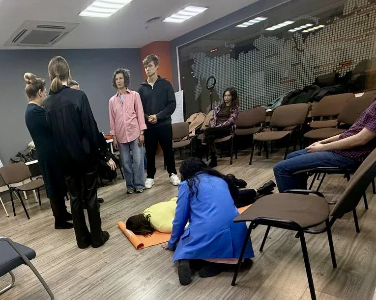
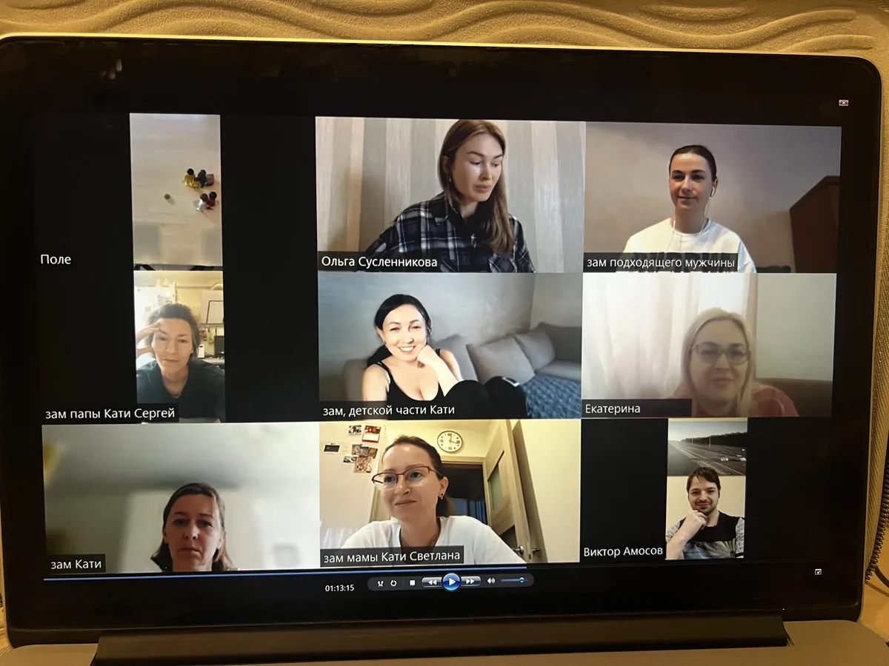
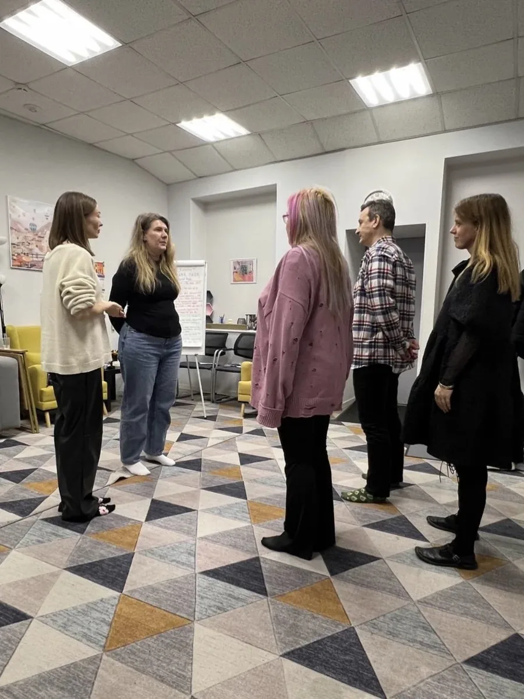
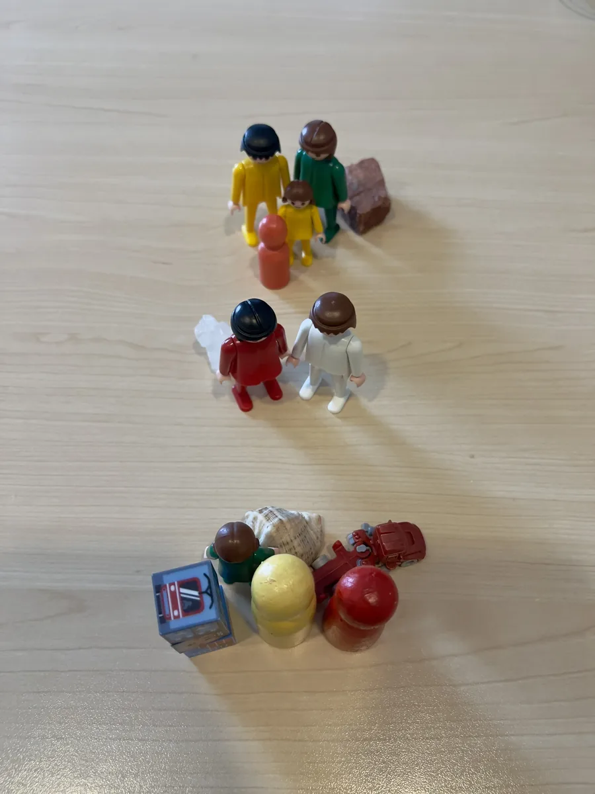

Результат
Клиническая психологическая квалификация и внимательное отношение к запросу.
глубина · осознанность · выбор
Проблемы в отношениях подрывают уверенность в себе и влияют на все сферы жизни.
Одна расстановка может кардинальным образом изменить ситуацию.
ЗаписатьсяКлиническая психологическая квалификация и внимательное отношение к запросу.
Исследуем не только отдельную ситуацию, но и её место в истории отношений.
Уважение к вашим чувствам, темпу и личным границам на каждом этапе.
Можно задать вопросы, выбрать формат и самостоятельно решить, подходит ли он вам.
обо мне
Меня зовут Ольга Сусленникова. Я клинический психолог, гипнолог, мастер и тренер НЛП, системный семейный расстановщик. В своей работе я использую метод системных семейных расстановок.
Я сопровождаю процесс без спешки и давления, объясняю формат и оставляю пространство для ваших вопросов и собственного решения.
Посмотреть форматы работы«Иногда, чтобы увидеть больше, нужно просто посмотреть на привычную историю иначе»
образование и практика
Документы о профессиональном обучении и подготовке.
как это работает
Бывает сложно заметить привычный сценарий, пока находишься внутри него. Расстановка помогает посмотреть на отношения и ситуацию со стороны, исследовать возможные связи и найти новые точки зрения на свой запрос.
Не нужно заранее знать ответы — достаточно принести вопрос, который сейчас важен для вас.
Сначала поговорим о вашей ситуации. Вы расскажете, что вас беспокоит. Вместе определим, что вы хотели бы понять на встрече.
Выберем формат работы.В группе другие участники могут стать заместителями и представлять важных людей из вашей ситуации.
На индивидуальной встрече используем фигурки или другие предметы.
Перейдём к практике. Вы расположите заместителей или фигурки так, как сейчас видите отношения между людьми в вашей ситуации.
Посмотрим, что происходит. Обсудим чувства, реакции и мысли, которые возникают во время упражнения.
Обсудим, что может быть связано с вашим запросом. Посмотрим, какие привычные модели поведения и семейные истории могут перекликаться с вашей ситуацией.
Попробуем посмотреть иначе. При необходимости изменим расположение заместителей или фигурок и обсудим, как меняется ваше восприятие ситуации.
Разберём, что оказалось важным для вас. Вы поделитесь своими наблюдениями и решите, какие из них вам близки, а какие — нет.
Подведём итоги встречи. Обсудим, что вы узнали о себе и своей ситуации. Вы сможете всё обдумать и самостоятельно решить, что делать дальше.






Вы можете прийти с любым жизненным вопросом, который вызывает тревогу, внутренний конфликт или ощущение застоя.
Конфликты, дистанция, трудности с доверием, близостью и взаимопониманием.
Отношения с родителями, детьми и родственниками, семейные роли и привычные сценарии.
Одни и те же трудности, которые возвращаются, хотя хочется изменить привычный ход событий.
Переживания после завершения отношений, вопросы личных границ и поиск опоры в период перемен.
Тревога, эмоциональная нагрузка, внутреннее напряжение и противоречивые чувства.
Принятие решений, сомнения и поиск опоры в период перемен.
Самооценка, личные границы, понимание собственных потребностей и ценности.
форматы и стоимость
Все перечисленные форматы доступны онлайн в Zoom или очно в Санкт-Петербурге.
Индивидуальная работа с вашим запросом в спокойном персональном формате.
Выбрать времяГрупповой формат онлайн в Zoom с участием других людей в ролях упражнения.
Выбрать времяОчная групповая встреча с заместителями. Дату и место уточняйте при записи.
Выбрать времяДля подтверждения записи необходима предоплата. Отменить запись можно не позднее чем за 24 часа до начала встречи.
если хочется сначала разобраться
Отдельная платная услуга для тех, кто пока не готов сразу записаться на расстановку.
Изменения начинаются сразу. Вот что говорят клиенты о своём состоянии после сессии:
Расстановка — это встреча с правдой. И эта правда делает вас свободнее.
отзывы клиентов
Впечатления от работы индивидуальны. Отзывы не гарантируют аналогичный результат.
«После расстановки я увидел: я искал не девушку, а одобрение. Теперь я просто выбираю себя и смотрю, что будет».
«Развод был очень тяжёлым. Я чувствовала вину и стыд. Расстановка помогла мне увидеть, что я не одна виновата. Я выдохнула и перестала корить себя».
«Расстановка дала много ответов, но вопросы по деньгам остались. Я поняла причину, но пока не знаю, как её убрать».
Встреча строится вокруг пространственного или ролевого упражнения и обсуждения личного опыта. Образный язык может использоваться как часть практики, но ощущения и ассоциации участников не являются доказательством фактов о других людях.
Основное направление расстановок — отношения в паре, семье и с близкими людьми: повторяющиеся ситуации, расставание, семейные конфликты, ревность, одиночество и личные границы. Перечень обозначает темы для обсуждения, а не обещание решить каждую из них.
Это отдельная платная услуга для тех, кто пока не готов сразу записаться на расстановку. За 30–40 минут онлайн в Zoom мы познакомимся, обсудим запрос, составим генограмму по вашему рассказу и поговорим о формате. Сессия не является медицинской диагностикой и не обязывает записываться на расстановку.
Стоимость первого сеанса — 1 200 ₽ вместо обычных 3 500 ₽. Решение о дальнейшем участии можно принять позднее.
Это схема родственных связей и значимых семейных событий, составленная по информации, которой вы готовы поделиться. Она помогает упорядочить рассказ, но сама по себе не подтверждает причины происходящего или факты о родственниках.
Индивидуальная расстановка на фигурках онлайн в Zoom — 1–1,5 часа, 5 000 ₽. Групповая онлайн с заместителями — 1,5–2 часа, 7 000 ₽. Групповая очно в Санкт-Петербурге — 1,5–2 часа, 12 000 ₽.
Для подтверждения записи необходима предоплата. Отменить запись можно не позднее чем за 24 часа до начала встречи. Подробности по переносу и возврату следует уточнить при записи.
Да. Индивидуальные расстановки на фигурках и групповые встречи с заместителями проводятся онлайн в Zoom. Также доступны очные групповые встречи в Санкт-Петербурге.
Реакции индивидуальны: могут появиться новые мысли, чувства или вопросы, а заметных изменений сразу может не быть. Обязательной «правильной» реакции нет, конкретный результат не гарантируется.
Правила конфиденциальности обсуждаются до встречи. В группе ваш запрос могут услышать другие участники; ведущий не может полностью контролировать их действия после встречи. Можно не раскрывать идентифицирующие подробности и отказаться от участия в упражнении.
Ольга Сусленникова, клинический психолог. Документ о квалификации имеется. Информация о форматах и записи размещена на этой странице.